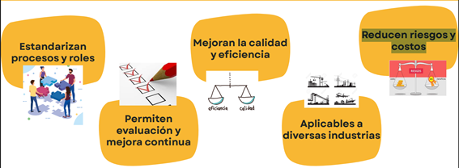

Principal
¿Que son?
Principios
Porque son
importantes
¿Por qué son importantes?
1.- Estandarizan procesos y roles
2.- Permiten evaluación y mejora continua
3.- Mejoran la calidad y eficiencia
4.- Aplicables a diversas industrias
5.- Reducen riesgos y costos
